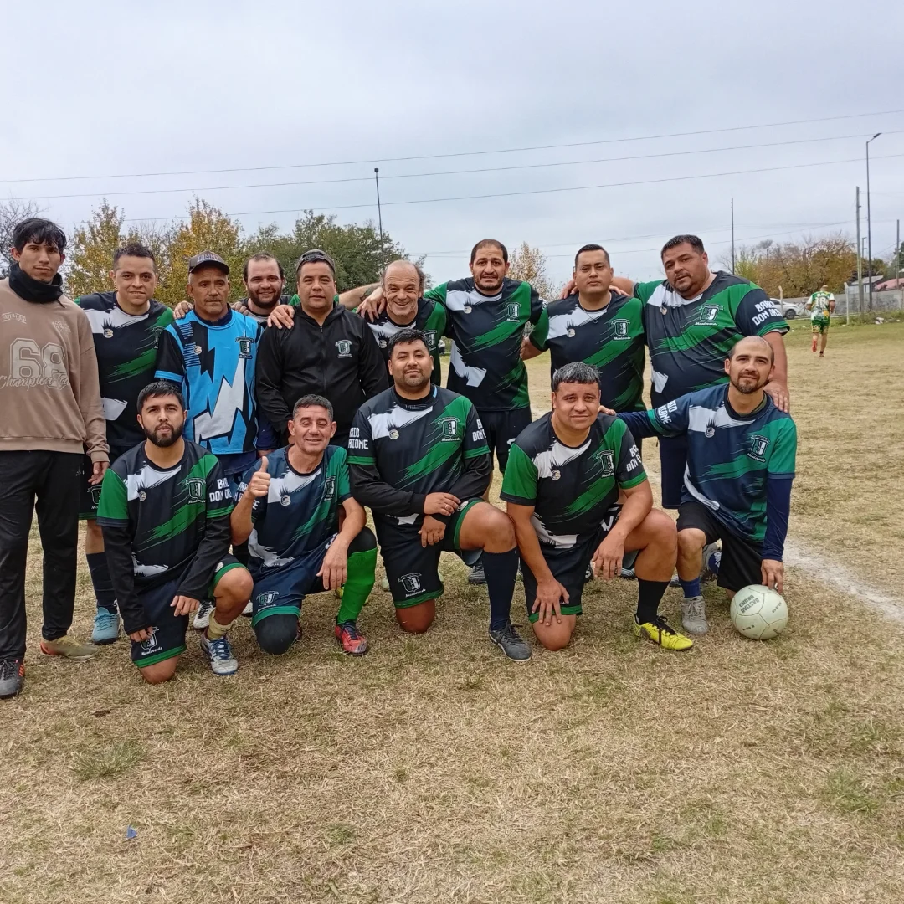

Inicio / Senior +35
Senior +35
Torneo Clausura. Los domingos, la cancha de Monteverde es de los que nunca dejaron de jugar.
Torneo Clausura · En nuestra cancha
Domingos de fútbol
Los domingos la cancha de Monteverde es de los que nunca dejaron de jugar. El torneo Senior +35 reúne a seis equipos de la zona, con premio al jugador del partido en cada fecha y todos los partidos transmitidos en vivo.
Domingos
10 · 11 · 12 hs
Entrada gratuita
En vivo por YouTube

Equipo localMonteverde +35
Tabla de posiciones
Actualizado · ver en Copa Fácil ↗Próxima fecha
Resultados por fecha
Tabla de goleadores
Jugador del partido
¿Tenés equipo de +35?
Escribinos al WhatsApp 11 6049-9150 y sumalo al próximo torneo.